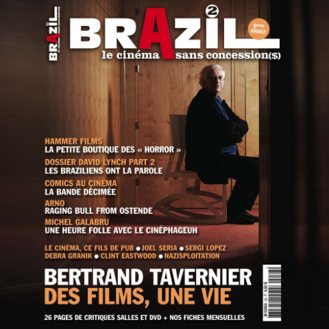
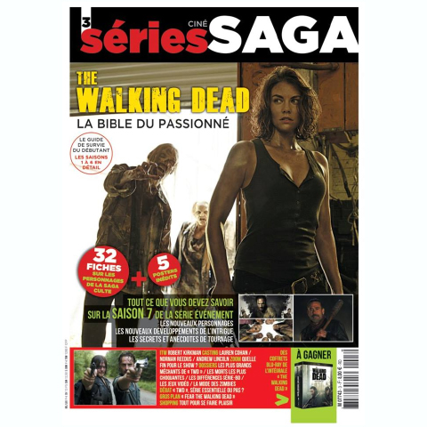
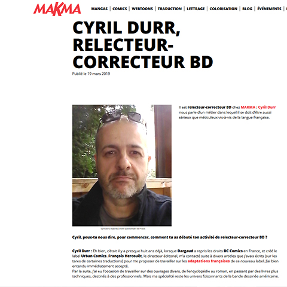
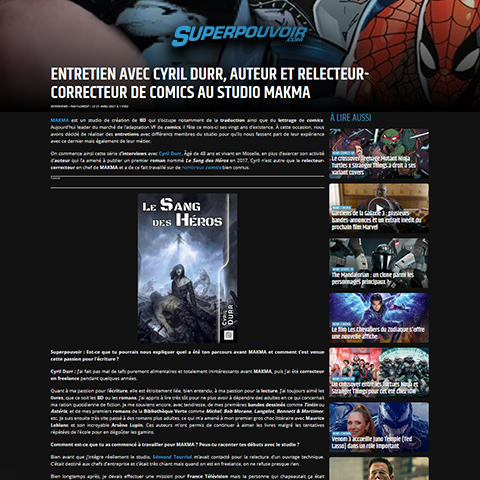

magazine Brazil (v2) #38
février 2011
interrogé à propos des adaptations de comics au cinéma

magazine Séries Saga #3
septembre 2016
interrogé à propos des différences entre les versions comics et série TV de la série The Walking Dead

site du Studio Makma
mars 2019
entretien abordant les métiers d'auteur et relecteur-correcteur

Superpouvoir
avril 2021
parcours professionnel et 20 ans du studio Makma